2022年北京市中考数学真题 · 数学解答题 第25题 · 对应解析
25. 单板滑雪大跳台是北京冬奥会比赛项目之一，举办场地为首钢滑雪大跳台，运动员起跳后的飞行路线可以看作是抛物线的一部分，建立如图所示的平面直角坐标系，从起跳到着陆的过程中，运动员的竖直高度 （单位：m）与水平距离
（单位：m）与水平距离 （单位：m）近似满足函数关系
（单位：m）近似满足函数关系 ．
．
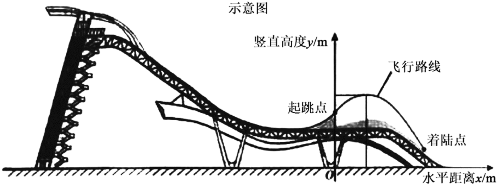
某运动员进行了两次训练．
（1）第一次训练时，该运动员的水平距离与竖直高度的几组数据如下：
水平距离x/m | 0 | 2 | 5 | 8 | 11 | 14 |
竖直高度y/m | 20.00 | 21.40 | 22.75 | 23.20 | 22.75 | 21.40 |
根据上述数据，直接写出该运动员竖直高度的最大值，并求出满足的函数关系
（2）第二次训练时，该运动员的竖直高度y与水平距离x近似满足函数关系 记该运动员第一次训练的着陆点的水平距离为d1，第二次训练的着陆点的水平距离为
记该运动员第一次训练的着陆点的水平距离为d1，第二次训练的着陆点的水平距离为 ，则
，则 ______（填“>”“=”或“<”）．
______（填“>”“=”或“<”）．
【答案】（1）23.20m；
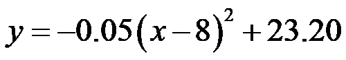
（2）
【解析】
【分析】（1）先根据表格中的数据找到顶点坐标，即可得出h、k的值，运动员竖直高度的最大值；将表格中除顶点坐标之外的一组数据代入函数关系式即可求出a的值，得出函数解析式；
（2）着陆点的纵坐标为 ，分别代入第一次和第二次的函数关系式，求出着陆点的横坐标，用t表示出和，然后进行比较即可．
，分别代入第一次和第二次的函数关系式，求出着陆点的横坐标，用t表示出和，然后进行比较即可．
【小问1详解】
解：根据表格中的数据可知，抛物线的顶点坐标为：
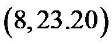
，∴
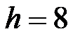
，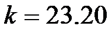
，即该运动员竖直高度的最大值为23.20m，
根据表格中的数据可知，当
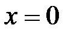
时，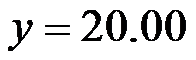
，代入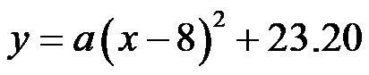
得：，解得：
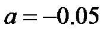
，∴函数关系关系式为：．
【小问2详解】
设着陆点的纵坐标为，则第一次训练时，
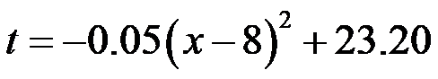
，解得：
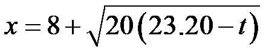
或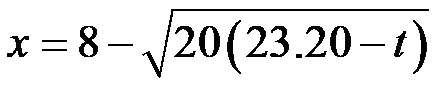
，∴根据图象可知，第一次训练时着陆点的水平距离
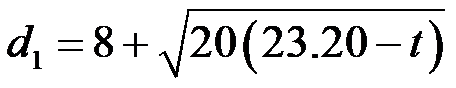
，第二次训练时，
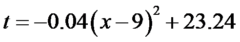
，解得：
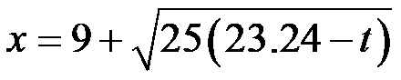
或，∴根据图象可知，第二次训练时着陆点的水平距离
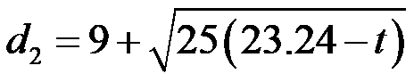
，∵
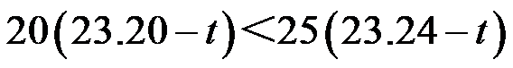
，∴
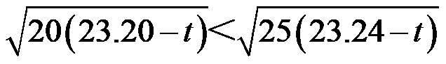
，∴
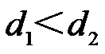
．故答案为：．
【点睛】本题主要考查了二次函数的应用，待定系数法求函数关系式，设着陆点的纵坐标为，用t表示出和，是解题的关键．